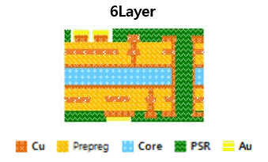

전원과 신호를 연결하고 구조를 지지한다

패키지 기판은 여러 층의 금속 배선과 층간 연결 통로로 구성됩니다. 내부 배선은 칩에 전원과 접지 경로를 제공하고, 패키지와 메인보드 사이의 신호를 전달합니다. 기판은 칩과 인터포저를 지지하는 역할도 합니다. 조립 과정과 사용 중 발생하는 변형을 고려해 재료와 두께, 층 구성을 설계합니다.

패키지 기판은 여러 층의 금속 배선과 층간 연결 통로로 구성됩니다. 내부 배선은 칩에 전원과 접지 경로를 제공하고, 패키지와 메인보드 사이의 신호를 전달합니다. 기판은 칩과 인터포저를 지지하는 역할도 합니다. 조립 과정과 사용 중 발생하는 변형을 고려해 재료와 두께, 층 구성을 설계합니다.